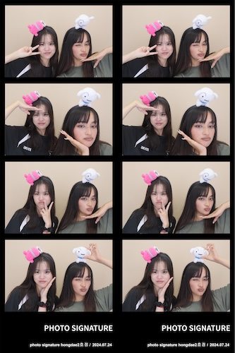
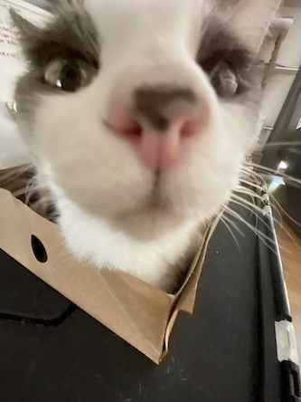

 
I am an ambiverted person so I enjoy a range of hobbies/interests that go from hanging out with my friends to spending time by myself (and with my cats). Above is a photo of my friend and roommate, Jasmine, when we went to South Korea together this summer and my calico cat, Keva. Feel free to click the links below to learn about some of my interests.